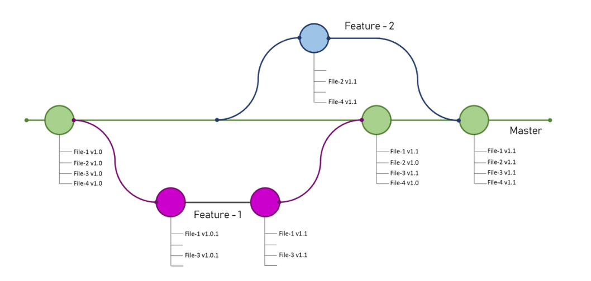

Git at CASD
Datascience team
Goals
- What is git?
- How does git work?
- What is GitHub/Gitlab?
- Git at CASD
What is git?
Git is a distributed version control system (VCS) created by Linus Torvalds in 2005 to manage the Linux kernel. The main objective of git is:
- Version control: Every change is recorded with author, date, and message.
- Backtracking: Recover any version of any file at any time.
- Collaboration: Creating a "parallel universe" for your code to make changes safely
Key concepts in git (1)
- Git Repository(repo): is the project folder where Git tracks all versions of your files
- Working Directory: The files and folders you're actively editing.
- Staging Area (Index): A temporary area to preview and prepare changes before committing.
- Snapshot: A snapshot records all your files at a given point of time.
- Commit: The act of taking a snapshot with date, author, and message.
Key concepts in git (2)
- Branch: A branch is a collection of linked commits. Each repo must have at least one branch. The main branch is called master branch by default
- Master Branch: is the production-ready code version of your project
- HEAD: A pointer to your current branch. It represents where you are in the Git history, and where the next commit will be written
- Merging Branch: A temporary area to preview and prepare changes before committing.
Git workflow

Git merge branch
TP1

What is github?
github.com is the most popular web-based git repository hosting service. It adds extra functinality on top of git (e.g. UI, pull requests, project management, etc.). There are other similar git hosting services:
Self-hosted web-based git repository
There are many self-hosted web-based git repository solutions:
- GitLab Community Edition (CE): Full-featured web-based git repository and open source
- Gitea: Lightweight, open source, easy to install
- SourceHut: Modular, minimalist, fast
- Gitprep: It is Github clone
Git at casd
CASD proposes two types of remote git repository: git-bare and self-hosted gitlab-ce server
- Git Bare Repository: provided by default for all CASD projects
- Gitlab-ce server: need to ask PMS for a cost estimation based on the server config
What is a Git Bare Repository?
A bare repository is a Git repository that does not have a working directory. It only contains the .git directory (i.e., the version control data), and it's typically used:
- As a central repository for collaboration (lightweight version of GitHub).
- As a continuous deployment target.
TP2